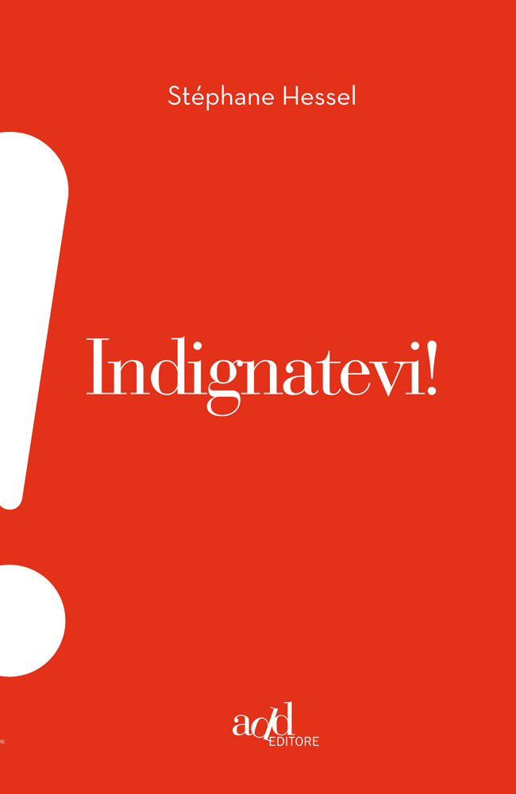

25:58 · 3 OPERE
Uno sfogo su Formigli, Floris, Marco Revelli e Bruno Vespa ed altri.
Il filo del discorso
Il contributo assume esplicitamente la forma di uno sfogo contro il linguaggio e l’organizzazione dei dibattiti televisivi. Caldarella contesta il potere del conduttore di distribuire la parola, interrompere e imporre tempi brevi, sostenendo che queste abitudini finiscano per condizionare anche la discussione politica. La ricorrenza degli stessi commentatori in controversie diverse gli appare come segno di un conformismo che sostituisce il confronto sui fatti. Un passo sulla dittatura e sul citare un unico libro accompagna questa critica; 1984 diventa poi il riferimento per la denuncia di un linguaggio che, nella sua lettura, rovescia il significato della pace e della guerra. Il richiamo a Indignatevi! introduce il tema della reazione morale dello spettatore. Nella seconda parte il relatore contrappone la durata di una domanda argomentata, ricordando un volume di conferenze con Marcuse, alla compressione dei discorsi complessi in pochi minuti. La conclusione distingue gli errori che possono essere corretti mediante il ragionamento dalle scelte politiche delle quali teme conseguenze irreparabili. Le accuse ai singoli e la diagnosi del sistema mediatico rimangono posizioni del relatore.
I libri nel discorso

La scuola dei dittatori
Identificazione probabile
Copertina: Mondadori · Narratori Italiani 102 · prima edizione italiana riveduta, 1962
Fotografia autentica della sovraccoperta illustrata da Franco Francese, edizione Mondadori 1962; estratta senza ricompressione dal PDF del catalogo Pontremoli, pagina 49 del file, pagina 47 stampata. Il 1938 riguarda la precedente versione dell’opera, non l’esemplare fotografato. Il video non identifica questa edizione.
Citazione sulla dittatura come regime del citare invece del pensare, associata al 1938: riscontro con Silone, ma titolo e autore non annunciati.
Passaggio 4:18 ↗ · Fonti e libro ↗
1984
Copertina: Newton Compton · edizione illustrativa
Orwell e 1984 sono nominati espressamente insieme allo slogan sulla guerra e la pace.
Passaggio 14:29 ↗ · Fonti e libro ↗
Indignatevi!
Identificazione probabile
Copertina: add editore · 2011 · traduzione di Maurizia Balmelli
Immagine autentica dell’opera, controllata visivamente; l’edizione di riferimento non è attribuita al filmato.
Il titolo Indignatevi! e la descrizione di un piccolo pamphlet suggeriscono Hessel; l’autore non è pronunciato.
Passaggio 17:52 ↗ · Fonti e libro ↗Minutaggi ricavati da testi automatici, da riascoltare. Le identificazioni probabili sono segnalate accanto ai libri.